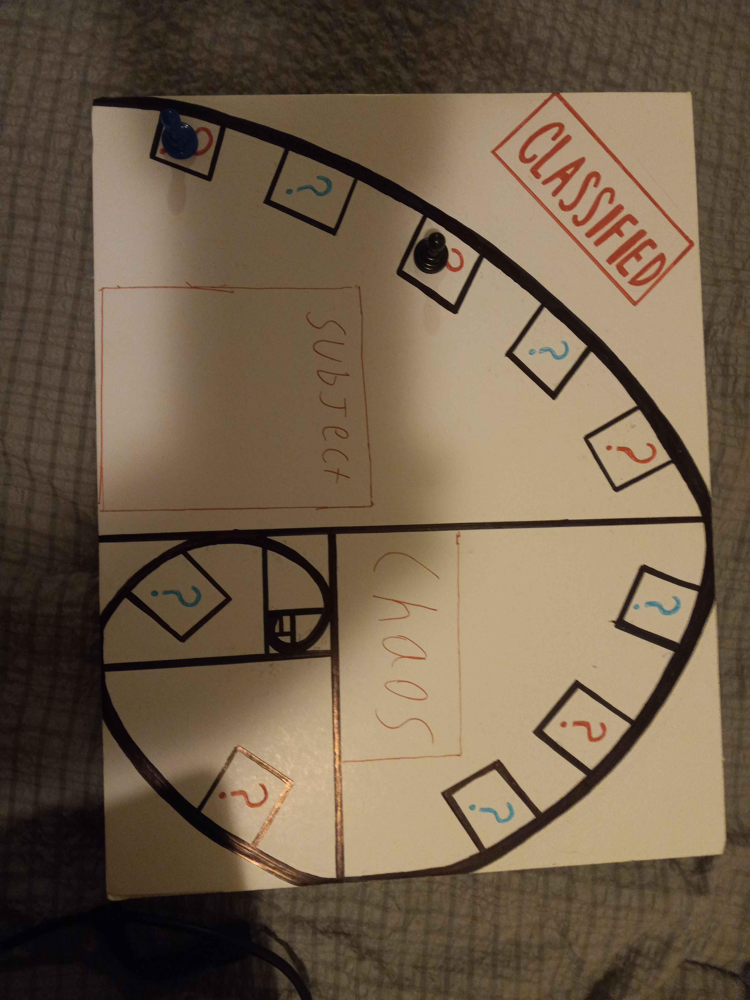

My time at McHenry County College has been transformative. The support I've received from both students and teachers has been incredible. Unlike other places, the homework deadlines here are flexible, which is crucial for someone like me who faces many life challenges. The understanding and kindness of my teachers have helped me stay on track and succeed each semester.
At MCC, everyone has their own personality, and no one is just working for a paycheck. The teachers know that students have invested in their education, and they make learning engaging and fun. This environment has made me feel good about attending classes and achieving my goals. I'm truly grateful for the experience and the people who have supported me along the way.
The flexibility at MCC has been a lifesaver for me. With the many challenges I've faced, having teachers who understand and are willing to work with me has made a huge difference. They care about their students and want to see us succeed. This kind of support is something I might not have found at other colleges.
The community at MCC is also something special. The students and teachers here are all unique, and they bring their personalities to the classroom. This makes learning more enjoyable and engaging. It's not just about getting through the coursework; it's about enjoying the process and feeling motivated to do well. I couldn't imagine a better place for my education, and I'm thankful for every opportunity MCC has given me.